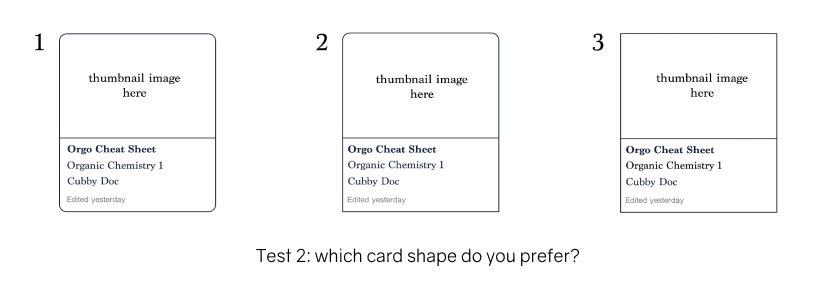

Roles
- UX Design
- Visual Design
- Branding
Deliverables
- User Survey
- User Personas
- User Stories
- User Flows
- Wireframes
- Low and High Fi Mockups & Prototypes
- User Testing
Tools
- Figma
- Adobe Illustrator
- Usability Hub
- Google Drive
- Draw.io
Problem
The client expressed interest in the cloud storage app market, but did not have a clear vision of what they wanted their app to be or even who their target audience was. I needed to figure out a target audience based on gaps in the market and to create an application that had the correct combination of cloud storage features to satisfy this group. Some specific features that the client asked to be included were saving existing content, creating original content, organizing any content, uploading content, and collaboration.
Solution
Through user research and a competitive analysis, I discovered that students are under-represented in the cloud storage market, so I was able to create Cubby and include the specific features that the client asked for. Cubby offers students the ability to create and share original content, upload and share existing content, and browse for and save existing content from the internet. All of these features also allow students to collaborate with their peers and teachers by sharing the files, folders, or boards in their Cubby.
Discovery
Phase
User Survey
I began by creating a user survey and distributing it to friends and contacts by posting on social media channels, various Slack groups, and sending out some emails. My survey reached 60 participants, and my objective with the survey was to learn the following:
- Which cloud storage apps users have and use
- What a user’s primary purpose is for using a cloud storage app
- What are some tasks that the user hopes to accomplish while using a cloud storage app
- Which cloud storage apps does the user use for collaboration
- What is the user’s age
- What is the user’s current employment status
I learned a lot from the survey results. Some of my key findings about my users were:
96%
use Google Drive
81%
use Dropbox
25%
use Pinterest
56%
use cloud storage apps for real time editing and collaboration
71%
use use cloud storage apps for uploading and sharing large files
55%
use cloud storage apps for school related purposes
94%
use Google Drive for collaboration
80%
are ages 15-30
62%
are students
User Personas
To gain a deeper understanding of my users, I asked some more in-depth questions to two individuals and used that data to generate user personas which will more specifically capture Cubby’s target audience.
Marcus is a 21 year old student in
Philadelphia, PA.
Marcus is a biology student at a top university and plans to pursue medicine after graduation. He has a lot going on now - class work, lab work, and the medical school application process. He is stressed and has a lot on his plate, and could definitely use a worthwhile and easy solution to help him stay organized and on top of all of his to-dos.
Goals
1. To be able to organize all of his files and collaborate with classmates on group projects.
2. To back up his files so that they are safe in case his computer crashes or gets stolen.
Frustrations
1. He is coming close to his storage capacity in the cloud storage app he uses now and he doesn't want to pay for the more expensive plan with additional storage - he is a student, after all!
2. With the apps he uses now, he can see shared files but cannot edit them in real time. He would need to download the file or document, make changes, and then upload it again, and he doesn't find this method so practical.
Samantha is an 18 year high school
senior in Houston, TX.
Samantha is a high school senior and hopes to be attending a university for art and design next fall. She is also the president of her school’s student council as well as a member of the school dance team and choir. Because of her crazy schedule, Samantha likes to use cloud storage apps to keep everything she needs organized and in one place.
Goals
1. To organize her school work as well as university application materials including her art portfolio.
2. To collect and share pre-existing content from the internet such as dance choreography ideas, sheet music for choir, or decor inspiration for her next student council event.
Frustrations
1. She has found that there are some cloud storage apps that cannot upload or display specific file types (such as an Adobe document) and this is not always conducive to her needs.
2. With the apps she’s currently using for brainstorming and collaboration, she doesn’t always feel that she is being provided with new content – she seems to be getting a lot of repeated information.
Competitive Analysis
It happens to be that the features that the client had asked for in their brief are also found within the three cloud-storage apps that my users use most: Pinterest; for browsing, saving and sharing content from the internet, Dropbox; for uploading and sharing users’ pre-existing content, and Google Drive; for creating and sharing original content. I chose to take a closer look at these three apps by conducting a SWOT analysis, determining who their target audience is, what their positioning is, and what are some things that make them different from the competition. Here are some of my findings:
- Primarily used for recreational cloud storage; browsing for and saving information, articles, and other forms of inspiration or ideas, with the ability to share saved information with others
- Used by individuals and businesses in the commerce industry
Dropbox
- Primarily used for uploading and sharing files
- Used by students, professionals, and individuals

Google Drive
- Primarily used for creating and sharing original content
- Used by students, professionals, and individuals
Information Architecture
User Stories & Flows
After I developed a better understanding of who my users are and what they might be interested in when it comes to this cloud storage app, I created user stories to map out different tasks that a user might want to accomplish while using the app. I followed this exercise with a series of user flows which visually illustrate the journey that a user will take via the app to complete these tasks.
View User Stories View User FlowsWireframes
Based on all previous research, I developed a series of hand-sketches which turned into wireframes to begin visualizing the layout of the app.

Dashboard + create content

Create new document + share/collaborate with others
Dashboard for mobile
User Testing Round 1
At this point, I brought my wireframes to three users to see how they each might interact with them. My testers gave me some helpful ideas of features and details to incorporate into the designs. The feedback I received was to add:
A search bar in the upload window as well as a “drag and drop” option for easy uploads
An indication that all content is automatically saved
An alteration to the onboarding process so that the main screen features a hero image or a different large graphic element, with either “sign in” or “sign up” with another button visible for the other option
This exercise was helpful for me because not only did I receive good feedback about design details that I would have otherwise overlooked, but I became more comfortable with other people viewing and interacting with my work.
Branding &
Identity
Now that l had a grasp on who my target audience was and what the gist of the app was all about, I began the branding phase.
I decided to call this app “Cubby” as its target audience is students, and a cubby is a common classroom resource used to store and organize many different school-related things. My objective with this brand was to create a sense of organization and clarity which will help users block out distractions and maximize their productivity.
Designing the Logo
I wanted the logo to be modern, simple and coherent as to not cause any visual distractions to the user. I started out by trying to incorporate the letter “C” or the whole word “Cubby” into squares and rectangles.
I eventually landed on these two design options and I decided to go with option 1 as I found it to be more visually interesting, and some feedback I sought out matched this opinion.
Color Palette
I brought some selected colors into the logo and produced the following outcome:
Mockups
Based on feedback from my wireframes and style guide, I created high-fidelity mockups using Figma to depict what the interfaces of specific screens will look like while using Cubby.


Landing page + sign up

User dashboard

Mobile sign in page
Preference Tests
As my wireframes became more polished, I ran some preference tests to help me decide on some details in my design. Here are two of the images that I showed testers:

All three of my testers told me that they liked the turquoise icons better than the yellow ones, because they were easier to see. I had thought this as well, but really wanted to figure out a way to include this yellow in my designs as I thought it was a nice accent color to the blues and turquoises, but I ultimately decided to let it go and just stick with the turquoise for readability purposes.
Two of my testers told me that they liked option 1 best, and one tester chose option 2. I decided to choose option 1 as I felt that the style aligned best with the overall brand. It evoked the greatest sense of simplicity which is something I was trying to achieve, and it gave the whole interface a modern and clean look.
Prototypes
After my mockups were completed, I used the prototyping tool on Figma to connect them to one another thereby enabling a user to test out the flow of the mockups. This phase was to help me as the designer understand the user’s ability to navigate the interface and therefore make tweaks to the designs if necessary.
Desktop Prototype Mobile PrototypeUser Testing Round 2
I had someone who was acting as the “senior designer” critique Cubby at this stage, and I got a lot of important feedback that I am planning on incorporating into this project in a future iteration. Here are some changes/additions I have made based off of his feedback so far:
- Desktop
- 1. Change the combination of typefaces on the dashboard cards to be only one typeface to help improve readability
- 2. Swap out dividing line of the “Browse” window on the desktop dashboard for a solid color in that section
Before

After

- Mobile
- 1. Change the combination of typefaces on the dashboard cards to be only one typeface to help improve readability
- 2. Modify the toolbar at the bottom of the mobile dashboard so that it doesn’t look dated
Before
After
To improve this project in the future, I hope to build out the “how it works” page (as indicated with a button on the landing page) to explain the product’s business model and a little more about how the product will work.
Conclusion
I learned a lot while working this project. I was really able to develop more of a hands-on understanding to the design process and it was interesting to see how one step leads to the next in a way that I feel truly makes sense. I found the multiple rounds of testing and iteration to be very productive and useful, and I am feeling much more comfortable with getting users’ feedback on different phases of the project. I am excited to incorporate these steps and all of the knowledge that I have gained into future projects.